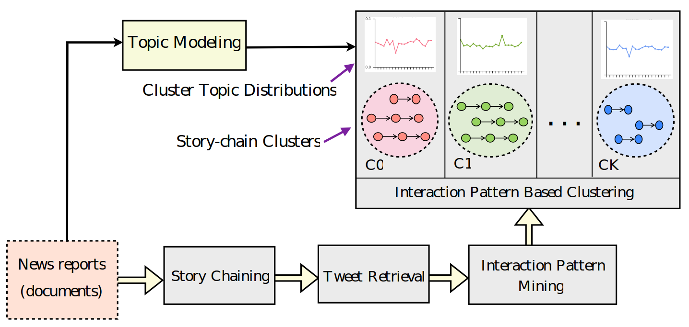
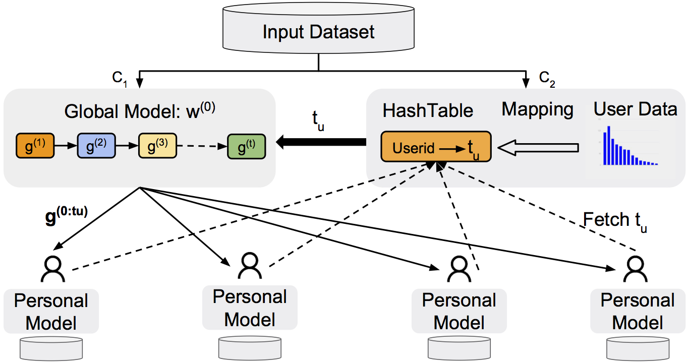

Research Interests
- Machine Learning and Deep Learning
- Multi-Instance Learning
- Multi-Task Learning & Transfer Learning
- Graph Neural Networks
- Interpretable Models
- Text Mining and Knowledge Discovery
- Information Reciprocity
- Multi-Source Data Mining
Research Applications
- Social Science
- Event Precursor Learning
- Event Forecasting
- Personalization
- Recommender Systems
- User Behavior Modeling
Precursor Mining for Event Modeling in Large-Scale Media
Using open source datasets, we study and develop machine learning approaches that jointly tackle the problem of identifying evidence-based precursors and forecasts events into the future.
-
Learning Dynamic Context Graphs for Predicting Social Events.
Songgaojun Deng, Huzefa Rangwala, Yue Ning.
In Proceedings of the 25th ACM SIGKDD Conference on Knowledge Discovery and Data Mining (KDD'19).
[ pdf | bibtex | code ] -
When do Crowds turn Violent? Uncovering Triggers from Media.
Yue Ning, Sathappan Muthiah, Huzefa Rangwala, David Mares and Naren Ramakrishnan.
In Proceedings of the 2018 IEEE/ACM International Conference on Advances in Social Networks Analysis and Mining (ASONAM'18).
[ pdf | bibtex ] -
STAPLE: Spatio-Temporal Precursor Learning for Event Forecasting.
Yue Ning, Rongrong Tao, Chandan K. Reddy, Huzefa Rangwala, James C. Starz, Naren Ramakrishnan.
In Proceedings of the 18th SIAM International Conference on Data Mining (SDM’18).
[ pdf | poster | bibtex ] -
Modeling Precursors for Event Forecasting via Nested Multi-Instance Learning.
Yue Ning, Sathappan Muthiah, Huzefa Rangwala, Naren Ramakrishnan.
In Proceedings of the 22nd ACM SIGKDD Conference on Knowledge Discovery and Data Mining (KDD’16).
[ pdf | video | poster | bibtex ] A Multiple Instance Learning Framework for Identifying Key Sentences and Detecting Events.
Wei Wang, Yue Ning, Huzefa Rangwala, Naren Ramakrishnan.
In Proceedings of the 25th ACM International Conference on Information and Knowledge Management (CIKM’16).
[ pdf | bibtex ]
Topical Analysis of Interaction between Social Media and News Media
We explore methods for modeling and understanding the type of information flow between two heterogeneous information media - news and Twitter; identify major interaction patterns; capture distinct topics for individual datasets as well as topic influences among multiple datasets.
Determining Relative Airport Threats from News and Social Media.
Rupinder Paul Khandpur, Taoran Ji, Yue Ning, Liang Zhao, Chang-Tien Lu, Erik Smith, Christopher Adams, Naren Ramakrishnan.
In Proceedings of the 29th Conference on Innovative Applications of Artifical Intelligence (IAAI’17).
[ pdf | bibtex ]-
Topical Analysis of Interactions Between News and Social Media.
Ting Hua, Yue Ning, Feng Chen, Chang-Tien Lu, Naren Ramakrishnan.
In Proceedings of the 30th AAAI Conference on Artificial Intelligence (AAAI’16).
[ pdf | bibtex ] -
Uncovering News-Twitter Reciprocity via Interaction Patterns.
Yue Ning, Sathappan Muthiah, Ravi Tandon, Naren Ramakrishnan.
In Proceedings of the IEEE/ACM International Conference on Advances in Social Networks Analysis and Mining (ASONAM’15).
[ pdf | slides | bibtex ]
Personalization and User Modeling
We design ranking methods that are efficient, explainable, and fair in order to understand user behavior in the context of personalized recommender systems.
A Gradient-based Adaptive Learning Framework for Efficient Personal Recommendation.
Yue Ning, Yue Shi, Liangjie Hong, Huzefa Rangwala, Naren Ramakrishnan.
In Proceedings of the 11th ACM Conference on Recommender Systems (RecSys’17).
[ pdf | slides | bibtex ]
Tutorials
- Spatio-Temporal Event Forecasting and Precursor Identification at SIGKDD 2019.
Sponsors